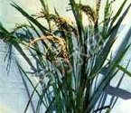
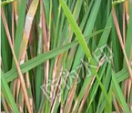
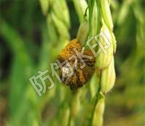

注册
|
登录
王学锋
退出
平台介绍
首页
专业大数据分析系统
大数据分析能力开放系统
数据运营平台
云数据开放平台
知识库
主要农作物
水稻
水稻下级目录1
水稻下级目录2
水稻下级目录3
水稻下级目录4
水稻下级目录5
水稻下级目录6
小麦
玉米
油菜
萝卜
菠菜
大蒜
大蒜下级目录1
大蒜下级目录2
大蒜下级目录3
大蒜下级目录4
大蒜下级目录5
大蒜下级目录6
芹菜
茴香
番茄
苦菜
菊苣
大白菜
苋菜
茄子
知识库列表
搜索
热门搜索：
二化螟
水稻
螟虫
茭白
菌核
菌核以少数
病原菌特征
发生特征
形态特征
在结果中搜索

稻瘟病
病害名称： 稻瘟病 | 拉丁文名： Rice blast | 英文名称：无
危害症状:
危害症状： 主要为害叶片、茎秆、穗部。因为害时期、部位不同分为苗瘟、叶瘟、节瘟、穗颈瘟、谷粒瘟。苗瘟发生于 三叶前，由种子带菌所致。病苗基部灰黑，上病原真菌变褐，卷缩而死，湿度较大时病部产生大量灰黑色霉层， 即 病原菌分生孢子梗和分生孢子......
详细内容
| 阅读次数：
16

稻纹枯病
病害名称： 稻纹枯病 | 拉丁文名： Rice sheath blight | 英文名称：无
危害症状:
一般在分蘖期到抽穗期盛发，先在近水面的叶鞘上出现暗绿色水侵状小斑点，以后逐渐扩大呈长 椭圆形的纹状病斑。病斑边缘呈褐色，中央淡褐色到灰白色，潮湿时病斑呈灰绿色，水侵状半透明。以后病斑逐 渐增多，互相连成一片不规则的云纹，向稻株上部发展。病部表面可形成由菌丝集结交织成的菌核。
详细内容
| 阅读次数：
16

稻曲病
病害名称： 稻曲病 | 拉丁文名： Rice false smut | 英文名称：无
危害症状:
又称伪黑穗病、绿黑穗病、谷花病、青粉病，俗称“丰产果”。该病只发生于水稻穗部，为害部分谷粒。 受害谷粒内形成菌丝块渐膨大，内外颖裂开，露出淡黄色块状物，即孢子座，后包于内外颖两侧，呈黑绿色，初外 包一层薄膜，后破裂，散生墨绿色粉末，即病菌的厚垣孢子，有的两侧生黑色扁平菌核，风吹雨打易脱落。
详细内容
| 阅读次数：
16
稻瘟病
病害名称： 稻瘟病 | 拉丁文名： Rice blast | 英文名称：无
危害症状:
危害症状： 主要为害叶片、茎秆、穗部。因为害时期、部位不同分为苗瘟、叶瘟、节瘟、穗颈瘟、谷粒瘟。苗瘟发生于 三叶前，由种子带菌所致。病苗基部灰黑，上病原真菌变褐，卷缩而死，湿度较大时病部产生大量灰黑色霉层， 即 病原菌分生孢子梗和分生孢子......
详细内容
| 阅读次数：
16
稻纹枯病
病害名称： 稻纹枯病 | 拉丁文名： Rice sheath blight | 英文名称：无
危害症状:
一般在分蘖期到抽穗期盛发，先在近水面的叶鞘上出现暗绿色水侵状小斑点，以后逐渐扩大呈长 椭圆形的纹状病斑。病斑边缘呈褐色，中央淡褐色到灰白色，潮湿时病斑呈灰绿色，水侵状半透明。以后病斑逐 渐增多，互相连成一片不规则的云纹，向稻株上部发展。病部表面可形成由菌丝集结交织成的菌核。
详细内容
| 阅读次数：
16
稻曲病
病害名称： 稻曲病 | 拉丁文名： Rice false smut | 英文名称：无
危害症状:
又称伪黑穗病、绿黑穗病、谷花病、青粉病，俗称“丰产果”。该病只发生于水稻穗部，为害部分谷粒。 受害谷粒内形成菌丝块渐膨大，内外颖裂开，露出淡黄色块状物，即孢子座，后包于内外颖两侧，呈黑绿色，初外 包一层薄膜，后破裂，散生墨绿色粉末，即病菌的厚垣孢子，有的两侧生黑色扁平菌核，风吹雨打易脱落。
详细内容
| 阅读次数：
16
每页显示
5
10
50
全部
条
上一页
1
2
3
4
5
6
7
...
下一页
共20页 / 390条数据
转到
页
本站所有经过分析处理的数据及分析结果（包括但不限于简报、走势、量价分析数据）均为南京绿色科技研究院有限公司所有，未经授权请勿复制、转载利用。违者我方有权追究法律责任！
copyright@2011 JinheTech.ALL rights reserved.版权所有金禾天成 京ICP备11009730